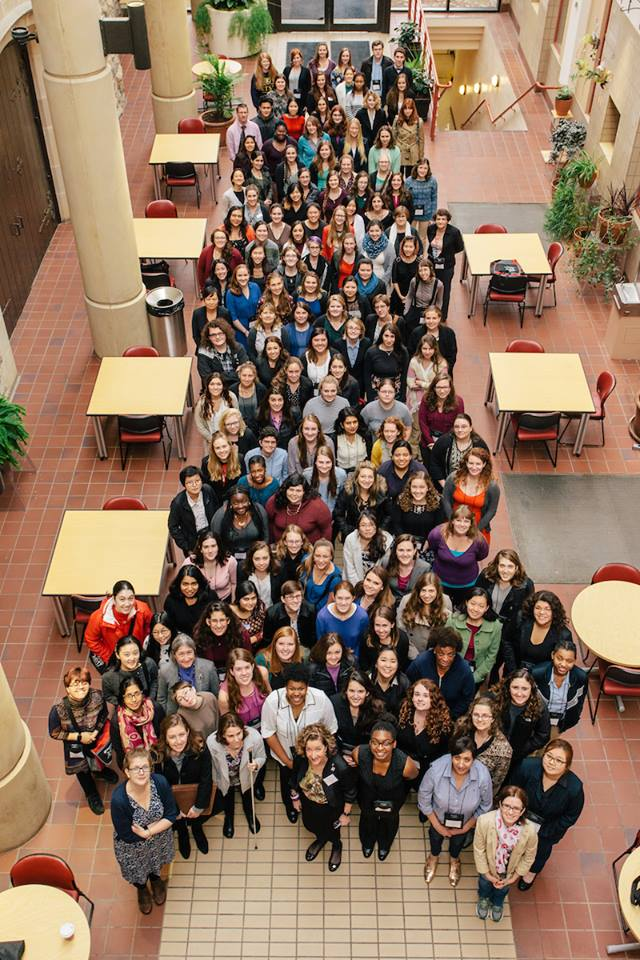
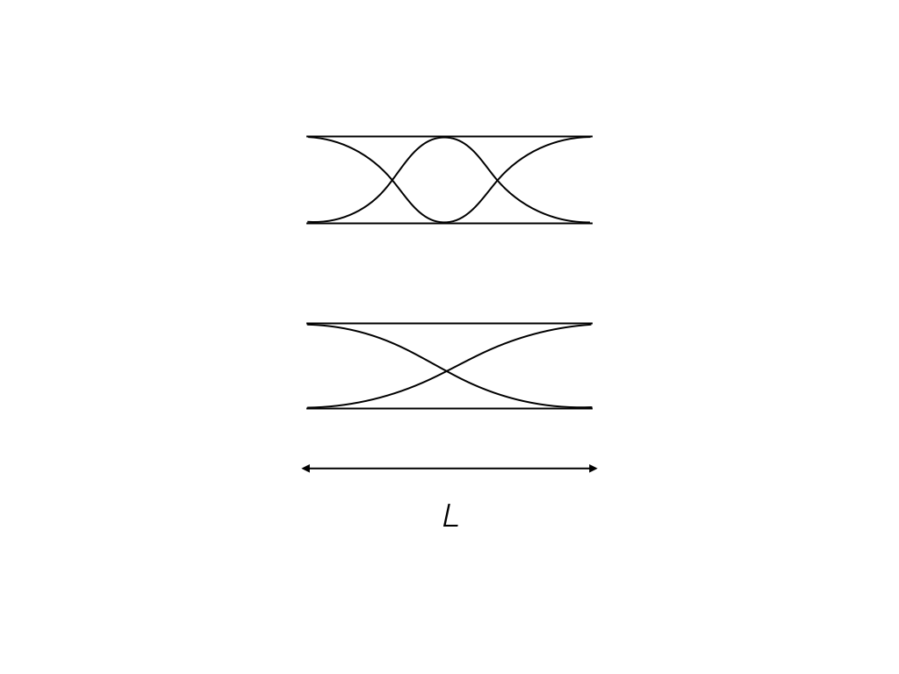
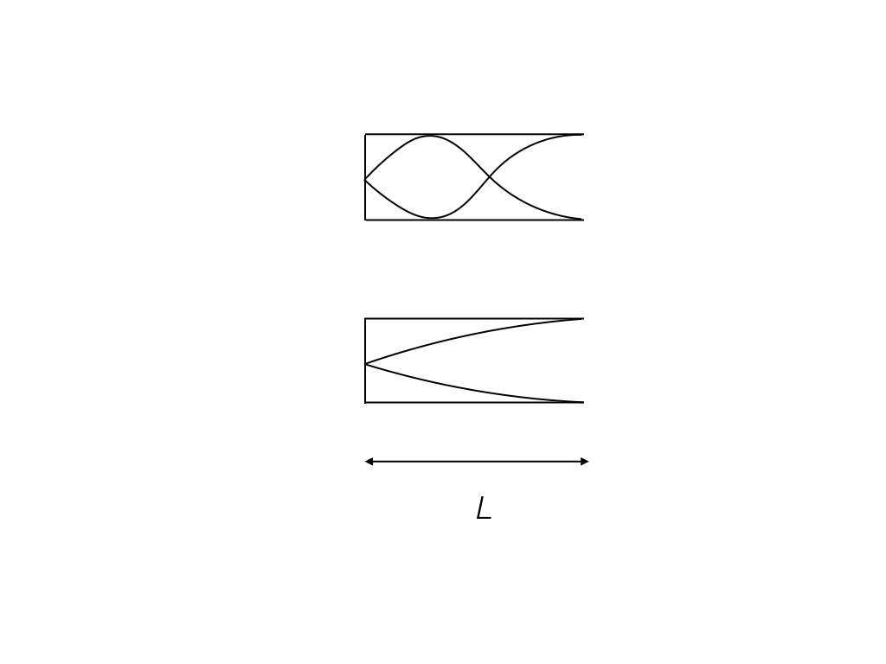

Two roads diverged in a wood, and I —
I took the one less travelled by,
and that has made all the difference.
Women Who Code · San Francisco, USA · 2021
Women Who Code (WWCode) is a global non-profit supporting women in technology through coding workshops, speaker events, and community networking, with chapters across dozens of cities worldwide.
Three sessions for the San Francisco chapter on data science and machine learning: data engineering (Part 1, Part 2 · Jul 2021), NLP fuzzy matching (recording, article · Apr 2021), and regression and statistics in data science (recording, article · Feb 2021; panel · Mar 2021).
Women in Machine Learning and Data Science · Bay Area, USA · Aug 2023
Women in Machine Learning and Data Science (WiMDS) is a global non-profit with chapters in over 30 cities, fostering a supportive community for women and allies working in machine learning and data science through talks, networking, and mentoring.
Invited speaker at the San Francisco Bay Area chapter event in August 2023 — presenting on Implementing Topic Modeling in the Industry.
Writing on Medium
An ongoing series of technical articles on Medium on data science, machine learning, and AI — bridging academic research and applied practice. Published work includes NLP fuzzy matching algorithms for approximate string comparison and record linkage, and regression and statistical methods in R.
APS Conference for Undergraduate Women in Physics · Virginia Tech, USA · January 2017
The American Physical Society (APS) hosts CUWiP — the Conference for Undergraduate Women in Physics — simultaneously at universities across the United States each January. One of the few large-scale national efforts dedicated to undergraduate women in physics, CUWiP brings together students, graduate researchers, and faculty to share experiences, hear from women working across academia and industry, and build networks with peers from across the country.
The Virginia Tech edition, organised by Prof. Lara Anderson and Prof. Giti Khodaparast, drew nearly 150 students from universities across the region. Contributed to the conference organisation and logistics — coordinating scheduling, space, and materials across a two-day programme.
Spoke on the Graduate Student Panel — sharing what it means to pursue a physics PhD as a woman, at a time when female researchers remain underrepresented in the field.
Coverage: Virginia Tech News · College of Science magazine · Conference schedule
“You did an amazing job during conference.” Prof. Giti Khodaparast · Department of Physics, Virginia Tech · January 2017

APS CUWiP 2017, Virginia Tech, USA
Women in Network Science (WiNS) · 2021–2025
Co-organiser of the WiNS satellite event at the 2021 Networks conference (joint Sunbelt/NetSci).
Hosted the panel discussion on 1 July 2021 — Gender bias in academia: what can our communities and professional societies do to address it?
- Dr. Brooke Foucault Welles — Founder, WiNS
- Dr. Laura Koehly — President, International Network for Social Network Analysis (INSNA)
- Dr. Ann McCranie — Organiser, Networks 2021
- Dr. Yamir Moreno — President, Network Science Society
- Dr. Alice Schwarze — President, WiNS
- Dr. Cassidy Sugimoto — President, International Society for Scientometrics and Informetrics

WiNS Satellite @ Networks 2021
From 2022 to 2025, served as Industry Ambassador for WiNS, bridging applied machine learning and academic network science.
Diwali at Slalom · New York, USA · 2022–present
Co-organiser of the annual Diwali celebration for Slalom’s New York metro market since 2022 — one of the most highly anticipated events of the year for the office. Working with a small team and a modest budget, the logistics meant making every detail count: sourcing food from local restaurants to fit everyone’s dietary needs and keeping decorations simple yet festive. In the early years, a community potluck rounded out the spread — colleagues bringing dishes from home turned a budget constraint into something that felt genuinely collaborative.
One favourite touch: setting up a large whiteboard where colleagues wrote “Happy Diwali” in every language spoken across the team — a small gesture that made the celebration feel genuinely inclusive for everyone. The event became a success that was praised across the company for boosting morale and bringing people closer together.
- “Thank you for organising such a great Diwali event. Had a blast — really important for building community.”
- “Everyone had a great time and the food was amazing.”
- “This is my favourite event of the year.”
Physics outreach · Virginia Tech, USA · 2015–2018
Contributed to the physics department’s school outreach programme at Virginia Tech — bringing hands-on demonstrations to local middle and high school students. Demonstrations included the Doppler effect and resonance in waves and sound: using open and closed pipes of different lengths to show how boundary conditions determine the frequencies a tube can sustain, making abstract wave theory tangible and audible for students encountering it for the first time.
The connection to musical instruments is direct. An open pipe — open at both ends, like a flute — supports all harmonics, giving a bright, full sound. A closed pipe — sealed at one end, like a clarinet — supports only odd harmonics, producing a rounder, more hollow timbre. The same physics that determines which notes a pipe can produce also determines the character of every woodwind instrument.


Peer review
- Machine Learning and Physical Sciences workshop, NeurIPS (2022, 2024)
- Synergy of Scientific and Machine Learning Modelling workshop, ICML (2023)
- Physical Review E (2022–present)
Community Change · Associate Editor · 2017–2018
Associate Editor for Community Change, an academic journal, during doctoral studies at Virginia Tech — reviewing a paper for publication and contributing to editorial decisions.